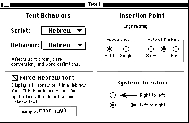
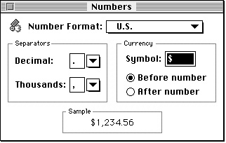
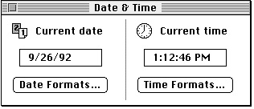
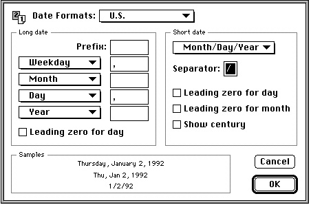
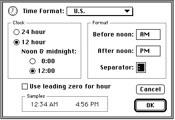

User Control of Script Settings
The script management system provides three control panels that allow the user to change the settings of certain script-system features and to save the settings across system restarts.The Text control panel, shown in Figure 1-64, is available on non-U.S. versions of system software. It allows users to set the text behavior of any enabled script system, and may allow the user to set the system direction, the state of the font force flag, the caret style, and the rate of caret blinking. (Some of the settings are not available unless certain script systems are present.)
The appearance of the dialog box varies with the version of localized system software; Figure 1-64 represents a Text control panel for Hebrew system software localized to have all text strings in English.
Figure 1-64 Text control panel

The Numbers control panel, shown in Figure 1-65, allows users to specify the basic number and currency formats for the system script. User settings made through this control panel are saved in the system script's numeric-format (
- The Text Behaviors settings control which string-manipulation (
'itl2') resource is used for sorting, case conversion, and word selection for the selected script system (including the system script). The choices are limited to the installed string-manipulation resources for the enabled script systems (including the Roman string-manipulation resource, which is always present). If more than one choice is available and the user changes this setting, the new setting is saved in theitlbSortfield of the script's international bundle resource.- The System Direction setting controls the primary line direction and alignment for all text and interface elements controlled by the system. The system direction may be set to either left to right or right to left. The user's selection is immediately reflected in the alignment of elements in all system and Finder dialog boxes and in all menus. It changes the setting of the system global variable
SysDirection. The setting is also saved in theitlcSysFlagsfield of the system's international configuration resource. (This control appears only if at least one bidirectional script system is enabled.)- The font force flag may be set to either
TRUEorFALSE, which affects the setting of the Script Manager variable accessed through thesmFontForceselector for theGetScriptManagerVariablefunction. The font force flag allows display of non-Roman text in an application that normally supports Roman text only. See the chapter "Script Manager" in this book. The setting made by the user is saved in theitlcFontForcefield of the system's international configuration resource. (This control appears only if the system script supports font forcing.)- The Insertion Point setting sets the caret style. The caret may appear either as a single caret or as a dual (split) caret (see Figure 1-46 on page 1-78 for an example). The setting made by the user is reflected in the value of the Script Manager general flags, accessed through the
smGenFlagsselector for theGetScriptManagerVariablefunction. See the chapter "Script Manager" in this book. The setting made by the user is saved in theitlcFlagsfield of the system's international configuration resource. (This control appears only if at least one bidirectional script system is installed.)The rate of caret blinking (slow, medium, or fast) affects the insertion point in text fields. The user's setting is saved in parameter RAM.
'itl0') resource.Figure 1-65 Numbers control panel

The Date & Time control panel, shown in Figure 1-66, allows users to set the current date and time and to specify formatting preferences for both. The settings made with this control panel affect the display of dates and times by the system and Finder and by the Text Utilities date- and time-formatting routines, when the resources of the system script are used (that is, as long as the international resources selection flag is
- The Number Format setting controls which numeric-format (
'itl0') resource is used for default number, currency, and short-date formats. The choices are limited to the installed numeric-format resources for the system script. If the user changes any of the default settings, a new setting called custom is created in the Number Format popup menu, and is saved as a new numeric-format resource for the system script; its ID is then saved in theitlbNumberfield of the system script's international bundle resource.- The Separators settings allow the user to override the default decimal separator and thousands separator for the system script. Suggested separators are presented in the popup menus for the settings, although the user can enter any 1-byte character for either separator. The settings made by the user are saved in the
decimalPtandthousSepfields of the system script's custom numeric-format resource.- The Currency settings allow the user to specify a currency symbol of up to three 1-byte characters or a single 2-byte character, and to choose whether the symbol precedes or follows a currency number. The settings made by the user are saved in the
currSym1throughcurrSym3fields of the system script's custom numeric-format resource.TRUE).Figure 1-66 Date & Time control panel

Format settings are made with individual Date Formats and Time Formats dialog boxes. Custom user settings made through these dialog boxes are saved as new numeric-format ('itl0') and long-date-format ('itl1') resources for the system script.The Date Formats dialog box sets date formats, as shown in Figure 1-67.
Figure 1-67 Date Formats dialog box (from Date & Time control panel)

The Time Formats dialog box sets time formats, as shown in Figure 1-68.
- The Date Formats setting allows the user to select a long-date-format (
'itl1') and numeric-format ('itl0') resource to be used for date formatting. The choices are limited to the installed pairs of numeric-format and long-date-format resources for the system script. If the user changes any of the default settings, a new setting called "custom" is created in the Date Formats popup menu, and is saved as a new pair of numeric-format and long-date-format resources for the system script; their IDs are then saved in theitlbNumberfield anditlbDatefield of the system script's international bundle resource.- The Long date settings allow the user to select what elements to include in a long date, what order they should be in, and what separators should be between them. The Long date settings also allow the user to specify the use of a leading zero for the day number in a long date. The settings made by the user are saved in the
days,months,suppressDay,lngDateFmt,st0throughst4, anddayLeading0fields of the system script's custom long-date-format resource.- The Short date settings allow the user to select the order of date elements in a short date, and to specify a single (1-byte) character as separator. The Short date settings also allow the user to specify whether to use a leading zero for day number or month number, and whether to show the century. The settings made by the user are saved in the
dateOrder,dateSep, andshortDateFmtfields of the system script's custom numeric-format resource.Figure 1-68 Time Formats dialog box (from Date & Time control panel)

- The Time Format setting allows the user to select a numeric-format (
'itl0') resource to be used for time formatting. The choices are limited to the installed numeric-format resources for the system script. If the user changes any of the default settings, a new setting called "custom" is created in the Time Formats popup menu, and is saved as a new pair of numeric-format and long-date-format resources for the system script; their IDs are then saved in theitlbNumberfield anditlbDatefield of the system srcipt's international bundle resource.- The Clock settings allow the user to choose a 12- or 24-hour time cycle, and to specify whether midnight (and noon, if a 12-hour cycle) is considered to be hour 0 or hour 12. The settings made by the user are saved in the
timeCyclefield of the system script's custom numeric-format resource.- The Format settings allow the user to specify a 1-byte character as separator for the time elements, and to specify morning and evening trailing strings (such as AM and PM) for the 12-hour cycle. The current separators and trailing strings are presented in the fields for the settings, but the user can enter any 1-byte character for the separator and any string of up to 4 bytes for either trailing string. The settings made by the user are saved in the
timeSep,mornStr, andeveStrfields of the system script's custom numeric-format resource.
- Script-specific control panels
- In addition to the control panels described in this section, individual script systems may provide their own control panels for other purposes, such as allowing a user to select a custom calendar system, an associated font, or a set of numerals (ASCII or non-ASCII). The results of those selections may be kept in a script preferences file.